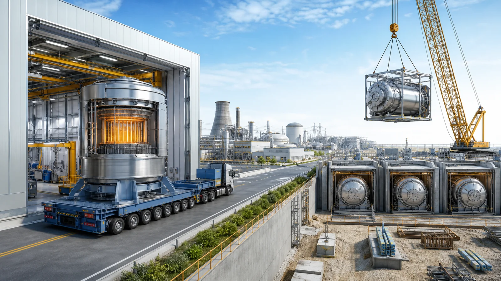
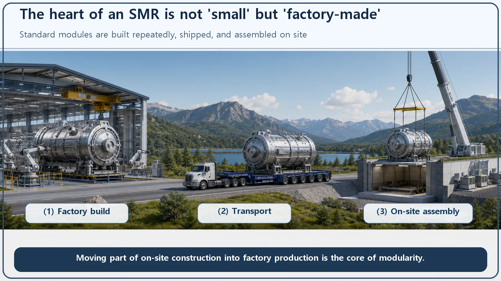
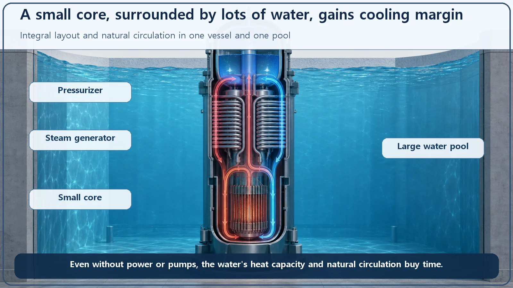

Reactor Types & Plant Systems · 184
What If Reactors Were Built in a Factory and Shipped? — The Core Idea Behind Small Modular Reactors (SMRs)
An SMR is less about being small than about being built in a factory, shipped and assembled, often with a different design concept inside.

A small modular reactor (SMR) is a reactor of roughly 300 MWe or less per unit whose main components are built repeatedly in a factory, then shipped and assembled on site. The key word is modular, not small. Many designs also change the concept inside, gathering components into one vessel and relying on passive cooling, in exchange for giving up some economies of scale.
A custom mansion or a prefab house?
There are two basic ways to build a house. In one, a crew digs foundations, lays bricks one by one, and after years finishes a one-of-a-kind mansion. In the other, a factory builds each room to a standard design, trucks them to the site, and snaps them together like building blocks: modular, or prefab, housing.
Most nuclear plants so far have been built the first way: one very large plant constructed from scratch on site. Then someone asked, "Why not build the plant in a factory and ship it?" That question is today's subject: the Small Modular Reactor, or SMR.
The answer is in the name
Each letter of SMR holds one key idea.
S is for Small. Each unit is designed with a much lower electrical output than a large plant. A large nuclear unit typically produces about 1,000 megawatts electric (MWe) or more, over a million kilowatts. An SMR is designed for roughly 300 MWe or less. MWe is the unit for the electricity a plant actually sends to the grid. Think of an SMR as anywhere from a fraction to about a tenth of one large unit.
M is for Modular. This M is the real heart of the SMR. The reactor's core components (the pressure vessel and its main parts) are built repeatedly to a standard design on a factory production line, then shipped in a highly finished state by road, rail or sea, and assembled and installed on site. In the prefab-house analogy, this is the "build the rooms in a factory and deliver them" part.
R is for Reactor. A reactor that produces heat from nuclear fission, of course.

"How it's built" matters more than "small"
If you understand an SMR as simply "a small reactor," you've only got half of it. Small reactors have existed for a long time: think of the research reactors at universities and laboratories. Nobody calls those SMRs.
The emphasis in SMR is not on "Small" but on "Modular." Build the same thing over and over in a factory and two things improve. Quality becomes uniform, and with each repetition the work becomes more practiced and standardized. Think of smartphones or cars, made far better on a production line than one by hand. The idea is to move much of the work that used to take years on site, at the mercy of weather and countless variables, into a controlled factory.
Nor is an SMR just a scaled-down copy of a large plant; designers often change the design concept itself. The two best-known examples are an integral layout and passive safety.
Everything in one vessel, and cooling that runs itself
Start with the integral layout. In a large plant, components such as the steam generator (which makes steam) and the pressurizer (which controls pressure) sit outside the reactor vessel. Many SMR designs put them inside the reactor pressure vessel itself. With the components gathered into one vessel, fewer large pipes run outside it. Fewer large pipes means the design can reduce, from the outset, the room for accidents in which such a pipe breaks and coolant rushes out. (This is a feature of many designs, not of every SMR, and it reduces this risk rather than eliminating it.)
Passive safety is easy to grasp this way. A small core holds less fuel, and the decay heat it keeps producing for a while after shutdown is smaller in absolute terms. Meanwhile the amount of water around that small core is relatively generous. Picture a small heater submerged in a big tank of water. The big tank slowly absorbs the heater's heat, so even without pumps working hard, the water can circulate on its own because of temperature differences (natural circulation) and carry the heat away. That's why many SMR designs, in an accident, rely less on active equipment such as pumps and outside electricity and instead use natural phenomena (gravity, natural circulation and large stores of water) to cool the core for an extended period.
One caution, though. Passive safety does not mean "accidents can never happen." It is a design approach with a large built-in margin, so that safety functions keep working without people stepping in or electricity being supplied. Safety is always a question of margin, never of guarantees.

Growing family? Add a room
Building in modules comes with a bonus: scalability. Instead of building one big plant all at once, you can place several small modules side by side on one site and add them one at a time as electricity demand grows. Like a prefab house, you add a standard room each time the family grows instead of building ten rooms on day one. And with several modules, one can keep generating while another is being maintained, which gives operations more flexibility.
So is it always better? A sober look
Power plants usually enjoy "economies of scale": the bigger you build, the cheaper the construction cost per kilowatt tends to be. Because each SMR unit is small, it gives up part of that advantage. Supplying the same total output with several SMRs could, by simple arithmetic, be more expensive per unit of output.
So why do it? SMRs are a strategy to win back elsewhere what they lose on economies of scale: learning effects and standardization from repeated factory production, shorter construction times, smaller up-front investment, flexibility without needing a large site, and step-by-step expansion matched to demand. How far these advantages actually offset the lost economies of scale is still being tested by large-scale production experience, so for now they are largely expectations and projections.
As for commercialization, as of the mid-2020s many SMR designs worldwide are spread across development, licensing and demonstration, and some have already started operating, but they have not yet reached the point of widespread commercial operation the way large plants have. In short, an SMR is neither "a cheap, safe cure-all" nor "a pointless miniature." It is a design strategy that gives up some economies of scale to gain the advantages of factory production, passive safety and flexibility, and its report card is still being graded.
One more easy mix-up
An SMR is not the name of a particular reactor type. Pressurized water reactors, high-temperature gas reactors, sodium-cooled fast reactors: many different core designs can each be built in SMR form. SMR is a category about "how small, and how it's built and installed," not about "what physics runs the core." Even smaller units, in the range of a few megawatts, are sometimes set apart as a subcategory called microreactors.
The one-line takeaways
- A small modular reactor (SMR) is any reactor with a small output per unit (roughly 300 MWe or less) whose main components are built repeatedly in a factory, then shipped and assembled on site.
- The emphasis is on "Modular" more than "Small": repeated factory production aims for uniform quality and standardization.
- It is often not a simple scale-down of a large plant but a different design concept, with an integral layout (components in one vessel) and passive safety (cooling by natural phenomena without pumps or power).
- A small core has less decay heat and relatively plenty of water, which favors natural circulation and pool cooling, meaning "a design with bigger margins," not "absolute safety."
- It gives up some economies of scale and tries to offset that with factory production, flexibility and step-by-step expansion; the final verdict on cost and commercialization is still being tested.